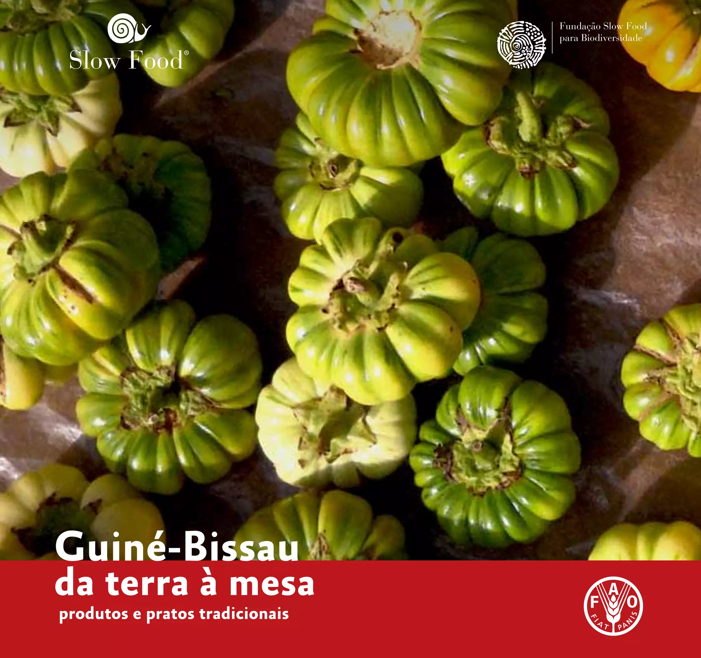
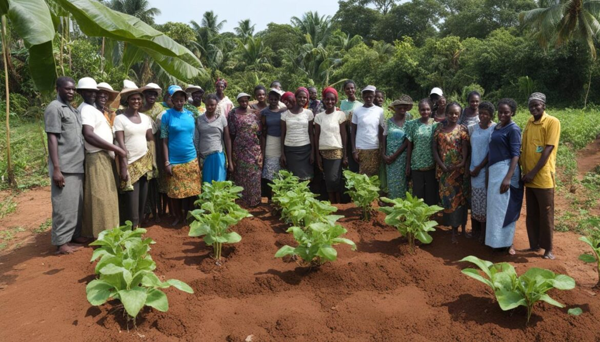
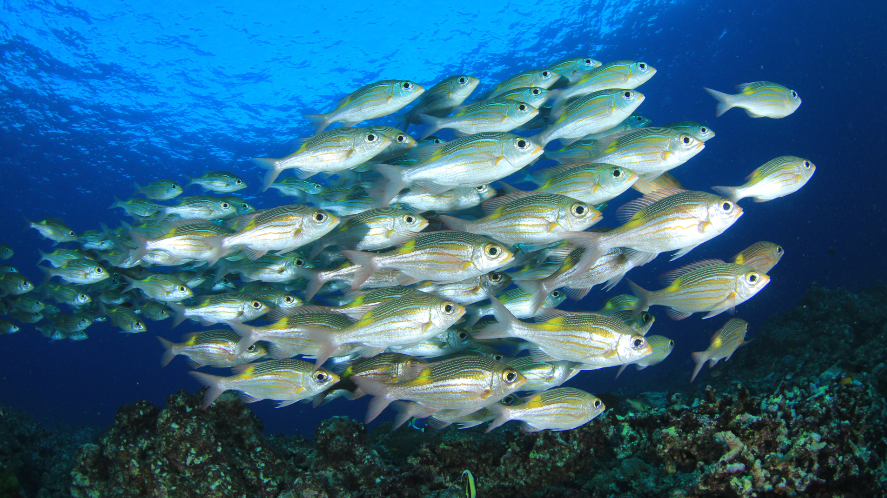

Por tudo isso, a importância da biodiversidade nada mais é do que manter o equilíbrio. Sem ela, a vida como a conhecemos acabaria desaparecendo aos poucos.
Sua importância reside no fato de fornecer diversos serviços ambientais ou ecossistêmicos, ou seja, fornecer as condições e processos naturais típicos dos ecossistemas e por meio dos quais o ser humano obtém diversos benefícios e, em última instância, sobrevive.   